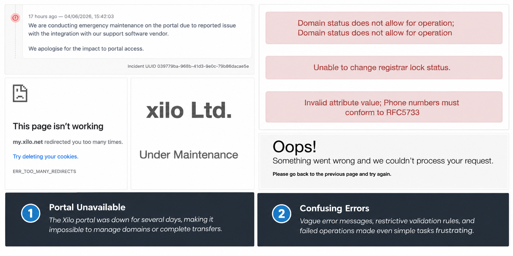

Published 12 June 2026
A WordPress Infrastructure Review
A security alert prompted a wider review of my WordPress infrastructure, leading to changes across server sizing, WordPress hardening, DNS management and domain operations.

Infrastructure changes made following a review prompted by monitoring alerts, security concerns and domain management issues.
The trigger for the review
After upgrading my WordPress site from a 1 GB Lightsail instance to a 2 GB instance, the platform appeared to be in a much better state. The earlier memory pressure had been reduced, monitoring was in place, and the site was running normally.
A few days later, I received an unexpected WordPress password reset email. Around the same period, CloudWatch alarms and health checks also raised concerns about the behaviour of the site.
The site did not appear to be compromised, but the combination of monitoring alerts and an unexpected security-related email was enough to prompt a wider review.
Reviewing the WordPress server
I started with the WordPress installation itself. The aim was to reduce unnecessary exposure, remove anything I did not need, and make the administrative surface of the site smaller.
- Created a new administrator account.
- Removed the old administrator account.
- Reviewed and removed unnecessary plugins.
- Disabled public user enumeration via the WordPress REST API.
- Reviewed logs and monitoring data after the alerts.
- Adjusted Apache worker settings to reduce memory pressure.
None of these changes was especially complex on its own. The important lesson was that operating a live WordPress site is not just about keeping the instance running. The application, plugins, users, logs and server configuration all form part of the operational picture.
Looking beyond the server
Once the WordPress installation had been reviewed, I looked at the wider infrastructure around the site. The website itself was hosted in AWS Lightsail, but the domains were still registered with Xilo, DNS was managed through Xilo, and the .com redirect relied on Cloudflare.
My goal was to simplify the overall architecture by moving more of the supporting infrastructure into AWS. The first step was migrating DNS for cliffsmithguitarlessons.co.uk into Route 53, giving me direct control of DNS alongside the rest of the AWS environment.
I then began planning a wider migration that would eventually move the .com redirect into AWS using CloudFront and an S3 redirect bucket, while also transferring the domain registrations themselves away from Xilo.
Registrar and transfer issues
The domain work quickly became more complicated than expected. During the migration process, several domain management operations began failing with unclear error messages, including nameserver changes, registrar lock changes and contact validation updates.
{kind=link}

Several domain management operations failed during the migration process. The root cause was eventually traced to a combination of registrar-side issues, an outdated registrant email address and registry restrictions triggered during the transfer process.
What initially looked like a DNS or registrar problem turned out to be an administrative one. The registrant email address on the domains was outdated, meaning transfer approval messages could not be received.
Updating the registrant details resolved that issue, but it triggered a registry-imposed transfer lock that delayed the remaining migration work. As a result, the .co.uk domain now uses Route 53 for DNS, but the domain registrations remain with Xilo and the .com redirect continues to use Cloudflare for the time being.
This was a useful reminder that infrastructure risk is not always caused by servers, code or cloud configuration. Sometimes the weak point is administrative information that has quietly become out of date.
Current state
The main WordPress site is now running on a larger Lightsail instance, with monitoring in place and a cleaner WordPress configuration. The .co.uk domain uses Route 53 for DNS, while the .com domain remains with Cloudflare for now because the registrar-side transfer process is delayed.
The next planned improvement is to place the .co.uk WordPress site behind CloudFront and AWS WAF. That should reduce direct exposure of the Lightsail instance and provide a better place to apply managed security rules and rate limiting.
Conclusion
What started as a response to a single security alert became a broader infrastructure review. The process improved the WordPress installation, clarified the domain architecture, exposed weaknesses in the registrar setup, and created a clear next step for improving resilience with CloudFront and AWS WAF.
Related project
This work was implemented as part of the WordPress on AWS Lightsail project.